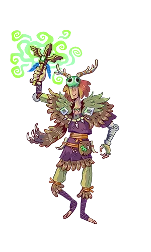

Warrior
A good defense is a good offense. Warriors are one of the strongest classes in the game, they can take huge punishment from their enemies and walk away without a scratch. Their multiple crowd control abilities and natural defense makes warriors a formidable foe.
Archer
Precision is the key to victory. The archer sits comfortably at range to decimate their enemies with powerful projectiles. Evading and dodging enemies attacks is crucial to the playstyle of this class. Archers dish out huge amounts of damage, but aren’t so adept at defending themselves.
Mage
Knowledge is power. Mages are naturally talented in the mystical arts, not only can they produce powerful incantations to destroy enemies, they can also heal allies and protect their friends. Although alone mages are not the most powerful, they are a valuable asset to any team.
Assassin
The unseen is the deadliest foe. The assassin uses their various stealth spells to swiftly and seamlessly vanquish their opponents. From the shadows they are able to strike multiple times before their enemy knows what hit them. In a duel with an Assassin, one should watch their back…. And their front.

Shaman
The Shaman benefits from powerful buffs, displacement, and crowd-control abilities at the cost of low defences. Using spell combinations, they can aggressively engage large amounts of enemies or simply sit back and support their team.
